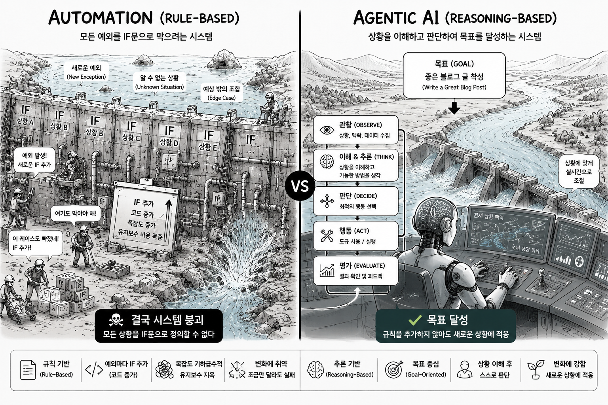

글쓰기 에이전트 LLM APIoh-my-haloagent · From Rules to Reasoning
주제와 참조 정보만 받아 LLM으로 글을 써내는 글쓰기 에이전트를 만든다. 진짜 주제는 글쓰기가 아니다 — 소프트웨어가 규칙 기반에서 판단 기반으로 바뀐 순간을 가장 쉽게 보여주는 사례다.
규칙 기반의 한계
기존 소프트웨어는 개발자가 모든 규칙을 직접 정의한다.
입력 → 규칙 → 출력
예외가 생길 때마다 elif를 더한다.
if A: do_a()
elif B: do_b()
elif C: do_c()
elif D: ... # 새 예외가 생길 때마다 계속문제는 현실이 A·B·C로 끝나지 않는다는 것이다 — A', A+B, B+C… 조합은 무한하다. 모든 상황을 if문으로 못 박을 수 없다. 규칙이 늘수록 복잡도와 유지보수 비용만 커진다.
과거 챗봇이 그랬다
LLM 이전 챗봇은 전부 입력 → 정해진 의도 분류 → 정해둔 답이었다. 키워드 매칭(ELIZA), 시나리오 분기(ARS), FAQ 검색, 의도 분류(Dialogflow·Rasa) — 정교해져도 본질은 같았다.
입력 → 가장 가까운 칸 찾기 → 그 칸의 정해진 답
그래서 시나리오를 벗어나면 늘 "죄송합니다, 이해하지 못했어요." 답을 만드는 게 아니라 꺼내는 것이었으니까.
규칙에서 판단으로
LLM이 바꾼 건 '글쓰기 기능'이 아니다. 규칙을 검색하던 자리에 이해와 판단이 들어왔다.
과거 (Rule) 상황 → 규칙 검색 → 행동 현재 (Reasoning) 상황 → 이해 → 판단 → 행동
이제 모든 예외를 코드로 적지 않는다. 상황을 이해하고 그때그때 판단한다. 그리고 그 판단을 실제로 수행하는 건 LLM API 호출이다 — 블로그 글쓰기 에이전트가 LLM API 없이는 성립하지 않는 이유다. if/elif로 못 짜는 일을, API 한 번이 대신한다.
에이전트 — 목표를 받는 작업자
에이전트는 LLM API를 호출하는 프로그램이 아니다. 목표·맥락·툴·추론으로 스스로 다음 행동을 정한다.
Goal + Context + Tools + Reasoning → 스스로 행동 결정
즉 규칙을 실행하는 소프트웨어가 아니라 목표를 달성하는 작업자에 가깝다.
블로그가 가장 쉬운 예시
블로그 글을 if/elif 고정 로직으로 짠 건 본 적 없을 것이다 — 애초에 규칙으로 안 되는 일이기 때문이다. 임의의 주제·출처에서 좋은 글을 뽑는 데엔 유한한 규칙이 없다. (템플릿·문장 스피너로 흉내 낸 적은 있지만 결과는 스팸이었다.)
바로 그래서 가장 선명한 예시다 — 블로그 글쓰기는 규칙으로는 처음부터 불가능했고, 판단으로 비로소 가능해진 일이다.
결과물 예시 (네이버 블로그, 새 창에서 열림):
LLM은 자동화를 조금 더 똑똑하게 만든 게 아니다. 소프트웨어를 규칙 기반에서 판단 기반으로 바꿨다. 블로그 작성 에이전트는 그 변화가 가장 이해하기 쉬운 사례일 뿐이다.
에이전트는 어떻게 글을 쓰나
핵심은 단순하다. 에이전트는 "어떻게 쓸지"를 안에 고정해 두고, 사용자에게선 "무엇을 쓸지"만 받는다. 둘을 묶어 LLM에 한 번 넘기면 글이 돌아온다.
[ 페르소나 + 작성 프롬프트 ] ← 에이전트에 내장 (매번 고정)
+
[ 주제 + 참조 정보 ] ← 사용자가 입력 (매번 다름)
↓
LLM 호출
↓
완성된 글
| 구성요소 | 누가 정하나 | 무엇을 | 예시 |
|---|---|---|---|
| 페르소나 | 에이전트 (내장) | 누가·어떤 톤으로 | 20년차 뷰티 에디터, 친근하고 솔직한 톤 |
| 작성 프롬프트 | 에이전트 (내장) | 어떤 형식·규칙으로 | 리뷰 형식 · 소제목 3개 · 800자 내외 · 과장 금지 |
| 주제 | 사용자 (입력) | 무엇에 대해 | ○○ 수분크림 |
| 참조 정보 | 사용자 (입력) | 무슨 근거로 | 성분표 · 가격 · 후기 |
페르소나·작성 프롬프트는 에이전트에 박아 둔 고정값이고, 주제·참조 정보만 사용자가 매번 준다. 사용자는 규칙을 한 줄도 짜지 않는다 — 주제와 자료만 주면, 페르소나를 입은 LLM이 판단해서 쓴다.
LLM API 키 발급 — 실제로 돌리려면
이 트랙은 ChatGPT·Claude 같은 채팅 화면이 아니라 API를 쓴다. 에이전트가 코드 안에서 LLM을 호출하기 때문이다. 그래서 결제 수단이 등록된 API 키가 필요하다. Anthropic(Claude)과 OpenAI(GPT) 중 하나면 된다 — 둘 다 발급 절차는 비슷하다.
공통 — 과금 방식
- 토큰당 과금. 월 구독이 아니라 쓴 만큼 낸다. 입력 토큰과 출력 토큰에 각각 단가가 붙고, 보통 출력이 입력보다 비싸다.
- 선불 충전(prepaid credits). 두 곳 모두 크레딧을 먼저 충전해 두고 호출할 때마다 차감하는 방식이 기본이다(최소 충전액이 있다). 카드 등록 없이 키만 만들면 호출이 막히거나 한도가 거의 없다.
- 모델 등급별 단가 차이가 크다. 가벼운 모델은 싸고 빠르며, 고성능 모델은 비싸다. 가벼운 글엔 싼 모델, 품질이 중요한 글엔 좋은 모델 — 이렇게 골라 비용을 줄인다.
Anthropic (Claude)
- console.anthropic.com에서 가입한다.
- Billing에서 카드를 등록하고 크레딧을 충전한다(선불).
- API Keys에서 키를 발급해 복사해 둔다(키는 한 번만 보인다).
요금은 100만 토큰(MTok) 기준이며 아래는 예시(2026년 6월 기준)다 — 단가는 바뀌므로 공식 요금 페이지에서 최신값을 확인한다.
| 모델 | 입력 / MTok | 출력 / MTok |
|---|---|---|
| Claude Haiku | $1 | $5 |
| Claude Sonnet | $3 | $15 |
| Claude Opus | $5 | $25 |
OpenAI (GPT)
- platform.openai.com/api-keys에서 가입하고 키를 만든다.
- Billing에서 카드를 등록하고 크레딧을 충전한다 — 최소 $5 충전부터 정상적인 사용 한도(Tier 1)와 최신 모델 접근이 열린다. 무료 체험 크레딧은 더 이상 자동 지급되지 않는다.
- 키를 복사해 둔다(키는 한 번만 보인다).
OpenAI도 토큰당·모델 등급별로 단가가 다르다(mini 계열은 저렴, flagship 계열은 비쌈). 단가는 자주 바뀌므로 정확한 값은 공식 요금 페이지에서 확인한다.
비용 감. 글 한 편은 보통 입력·출력 합쳐 수천~수만 토큰 수준이라, 위 단가 기준으로 글 하나당 수십 원~수백 원 선이다. 길게 쓰거나 참조 자료가 많아질수록 토큰이 늘어 비용도 는다. 처음엔 싼 모델로 감을 잡고 올리는 걸 권한다.
키 관리. API 키는 비밀번호다. 코드·깃·블로그에 그대로 올리지 말고
.env나 환경변수로 다룬다. 노출되면 즉시 폐기(rotate)한다.
만들어보기 — oh-my-haloagent로 짓는다
이 글쓰기 에이전트도 oh-my-haloagent 템플릿과 HALO 워크플로우로 만든다. HALO는 에이전트라는 소프트웨어를 신뢰성 있게 개발하는 도구다 — 요구사항을 설계·구현하고 테스트로 동작을 검증한다. Claude Code·Git 설치는 트랙 H의 설치 가이드와 동일하다.
1단계 — 템플릿으로 내 레포 만들기
- GitHub에서 oh-my-haloagent를 연다.
- “Use this template” → “Create a new repository”로 독립된 새 레포를 만든다(fork 아님).
- 로컬로 복제한다.
git clone https://github.com/<you>/<your-repo>.git
cd <your-repo>2단계 — LLM API 키 발급
위 「LLM API 키 발급」 절차대로 Anthropic 또는 OpenAI 키를 발급하고 결제를 등록한다. 에이전트가 글을 쓸 때 이 키로 LLM을 호출한다.
3단계 — /halo-workflow로 만든다
"이런 에이전트를 만들어라"를 요구사항으로 준다 — 페르소나·작성 프롬프트를 내장하고, 사용자에게선 주제·참조 정보만 받아 LLM으로 글을 생성하는 에이전트다. 언어·프레임워크는 안 적어도 된다 — 새 프로젝트라서 HALO가 P1에서 직접 물어본다(고민되면 "파이썬").
/halo-workflow LLM API로 글을 쓰는 글쓰기 에이전트를 만든다.
- 에이전트는 '작성 프롬프트'와 '페르소나(글쓴이 역할·톤)'를 내장한다.
- 사용자는 '주제'와 '참조할 정보(상품 정보·자료)'만 입력한다.
- 에이전트는 [페르소나 + 작성 프롬프트 + 주제 + 참조 정보]를 LLM에 전달해
글을 생성하고 결과를 출력한다.
LLM API 키는 내가 발급받았다.